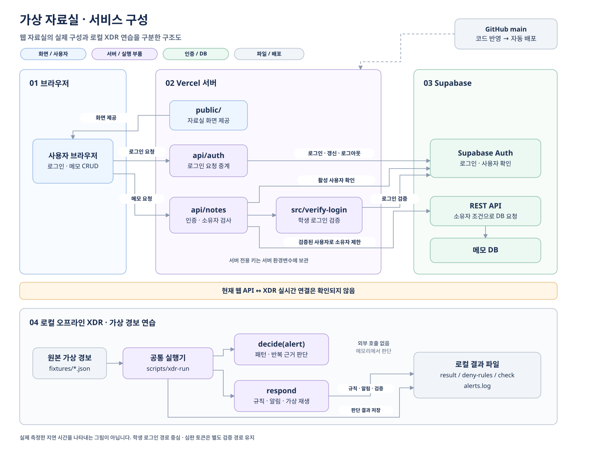
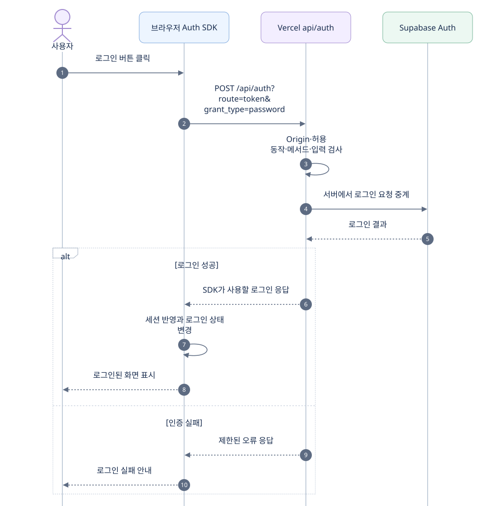
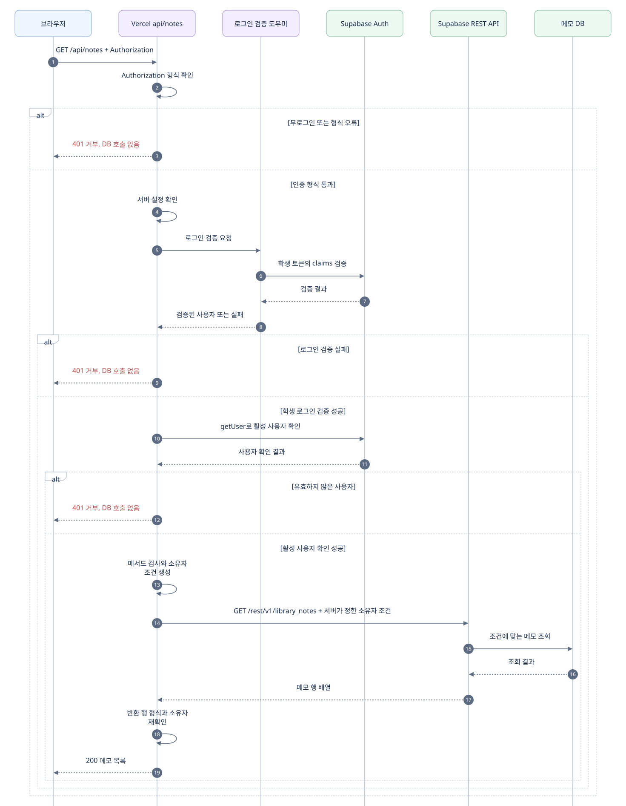
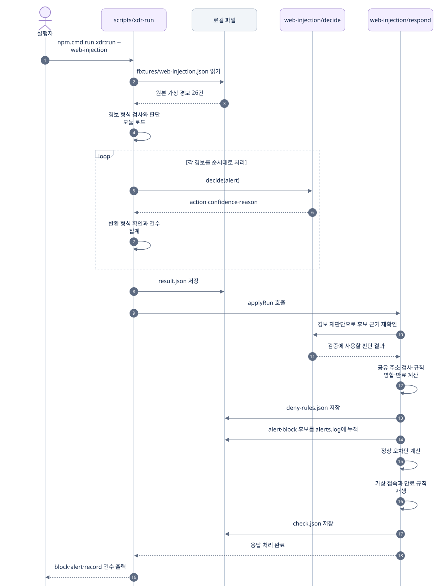

XDR-02 전체 작업 정리
정리일: 2026-10-12. 구현·검증·배포 기록은 2026-10-08 작업과 이후 대화를 기준으로 정리했습니다.
이 문서는 XDR-02에서 수행한 작업, 프로그램 흐름, 확인 결과와 사용자 제안으로 진행한 추가 개선을 함께 기록합니다. 작성 중에는 프로그램·DB·결과 파일을 변경하거나 시험·배포를 다시 실행하지 않았습니다. 방어전 종료 후 전체 파일을 모아 정리하는 작업은 이번에 수행하지 않았습니다.
1. 기록과 실행 파일의 위치
5단계 기록은 5/에, 보너스 작업 기록은 XDR-01/과 XDR-02/에 둡니다.
실행 코드는 각각 xdr/brute-force/와 xdr/web-injection/에 유지합니다.
기록 폴더에는 프로그램 사본을 만들지 않고 실제 코드·결과 파일로 연결합니다.
| 구분 | 기록 위치 | 실행 코드 위치 |
|---|---|---|
| 5단계 자료실 | 5단계 README | 프로젝트의 api/·src/·public/ |
| XDR-01 무차별 로그인 | XDR-01 README | xdr/brute-force/ |
| XDR-02 웹 주입 | XDR-02 README 및 이 문서 | xdr/web-injection/ |
기존 상세 구현 기록은 웹 주입 README에 보존합니다. 해당 README의 배포·판정 미확인은 작성 당시 상태이며, 이후 확인 결과는 이 문서의 6절에 적었습니다.
2. 작업 목표와 구현 범위
웹 경보에서 SQL 주입, 스크립트 주입, 경로 이탈, 명령 주입의 근거를 구분하고, 명확한 반복 공격은 block 후보, 애매한 시도는 alert, 정상 이벤트는 record로 처리하는 분석 부품을 만들었습니다.
| 제작 | 수행한 작업 | 결과 |
|---|---|---|
| 1 · 경보 읽기 | 확인용 다섯 항목을 안전하게 출력하는 읽기 도구 작성 | 가상 경보 26건에서 26줄 출력 |
| 2 · 패턴 정리 | 네 패턴의 이름·조건·근거·출처 정리 | 패턴 목록과 판단 파일에 반영 |
| 3 · 독립 판단 | 패턴을 내장한 동기 decide(alert) 작성 | 판단 파일의 import·인터넷·키·파일 입출력 없이 동작 |
| 4 · 알림과 차단 후보 | 후보 근거 재확인, 알림 누적, 만료 규칙, 추가 검사 부품 작성 | 근거와 만료 시각이 있는 가상 규칙 7개 |
| 5 · 실행과 검증 | 공통 실행기에 웹 주입 모듈 연결, 결과 생성, 관련 가상 시험 수행 | block 8·alert 9·record 9, 정상 오차단 0건 |
| 작업 문서 | 루트 안내·XDR 목차·단계 README와 상세 기록 연결 | 수행 내용·결과·재실행 방법을 찾을 수 있도록 정리 |
기존 자료실 기능, XDR-01 코드, 원본 가상 경보와 다른 미커밋 작업은 보존했습니다. 자료실의 5단계 설정과 운영 측 judgeIssuer도 유지했습니다.
3. 서비스 구성·요청 순서·판단 로직
큰 틀의 서비스 구성
화면은 파랑, 서버·실행 부품은 보라, 인증·DB는 초록, 파일·배포는 회색, 거부는 빨강을 사용합니다. 구성도는 draw.io 원본으로, 시퀀스와 판단 흐름은 Mermaid 원본으로 관리하고 문서에는 SVG를 넣었습니다.

웹 서비스는 브라우저·Vercel 서버 함수·Supabase Auth·DB로 구성됩니다. 로그인과 메모 기능은 서로 다른 서버 API로 처리합니다. DB 호출에 필요한 서버 전용 키는 서버 환경변수에만 둡니다. DB의 학생 직접 접근 권한 회수와 소유자 정책은 유지하며, 서버 API도 검증된 사용자로 소유자를 제한합니다. 그림은 학생 로그인 경로를 중심으로 표현했습니다. 운영 측 심판 토큰의 별도 검증 경로는 로그인 검증 도우미에 유지되어 있습니다.
오프라인 XDR는 로컬 가상 경보를 읽고 결과 파일을 만드는 흐름입니다. 웹 메모 API에서 XDR로 사건을 보내거나 Wazuh·운영 ZTNA를 연결하는 경로는 현재 확인되지 않았으므로 두 영역을 연결하지 않았습니다. 별도 미커밋 Jev 시험 준비 코드는 이 제출·배포 구성 범위에 포함하지 않았습니다.
시퀀스 다이어그램을 읽는 방법
아래 그림은 코드의 호출·응답을 위에서 아래로 읽는 시퀀스 다이어그램입니다. 타이밍 다이어그램처럼 상태의 시간 변화나 실제 지연 시간을 측정한 그림은 아닙니다. 화살표는 호출·응답 순서이며, 각 단계의 길이는 소요 시간을 의미하지 않습니다.
로그인 요청과 응답 순서

Mermaid 코드 보기
%%{init: {"theme":"base","fontFamily":"Malgun Gothic, Segoe UI, sans-serif","themeVariables":{"fontFamily":"Malgun Gothic, Segoe UI, sans-serif","fontSize":"16px","primaryColor":"#F3EEFF","primaryTextColor":"#172B4D","primaryBorderColor":"#A28BD0","secondaryColor":"#EDF5FF","tertiaryColor":"#F1F5F9","lineColor":"#8797AD","textColor":"#172B4D","actorBkg":"#F3EEFF","actorBorder":"#A28BD0","actorTextColor":"#172B4D","actorLineColor":"#C5CFDC","signalColor":"#5D6B82","signalTextColor":"#172B4D","labelBoxBkgColor":"#FFFFFF","labelBoxBorderColor":"#A6B2C3","labelTextColor":"#172B4D","loopTextColor":"#172B4D","noteBkgColor":"#FFF6E7","noteBorderColor":"#DEB267","noteTextColor":"#172B4D","activationBkgColor":"#E6DEF5","activationBorderColor":"#A28BD0","sequenceNumberColor":"#FFFFFF"},"sequence":{"actorMargin":64,"width":180,"height":62,"boxMargin":18,"boxTextMargin":14,"noteMargin":20,"messageMargin":42,"diagramMarginX":35,"diagramMarginY":24,"mirrorActors":false,"wrap":true,"useMaxWidth":true},"flowchart":{"curve":"linear","nodeSpacing":46,"rankSpacing":55,"htmlLabels":false},"themeCSS":".actor { font-weight: 600; } .messageText { font-size: 16px; } .loopLine { stroke: #C5CFDC; stroke-width: 1.2px; }rect.actor[name=\"Browser\"]{fill:#EDF5FF;stroke:#7FA9DE;}rect.actor[name=\"API\"],rect.actor[name=\"Verify\"],rect.actor[name=\"Runner\"],rect.actor[name=\"Decide\"],rect.actor[name=\"Respond\"]{fill:#F3EEFF;stroke:#A28BD0;}rect.actor[name=\"Auth\"],rect.actor[name=\"REST\"],rect.actor[name=\"DB\"]{fill:#ECF8F2;stroke:#78B69A;}rect.actor[name=\"Files\"]{fill:#F1F5F9;stroke:#A6B2C3;}"}}%%
sequenceDiagram
autonumber
actor Student as 사용자
participant Browser as 브라우저 Auth SDK
participant API as Vercel api/auth
participant Auth as Supabase Auth
Student->>Browser: 로그인 버튼 클릭
Browser->>API: POST /api/auth?<br/>route=token&<br/>grant_type=password
API->>API: Origin·허용 동작·메서드·입력 검사
API->>Auth: 서버에서 로그인 요청 중계
Auth-->>API: 로그인 결과
alt 로그인 성공
API-->>Browser: SDK가 사용할 로그인 응답
Browser->>Browser: 세션 반영과 로그인 상태 변경
Browser-->>Student: 로그인된 화면 표시
else 인증 실패
API-->>Browser: 제한된 오류 응답
Browser-->>Student: 로그인 실패 안내
end
그림의 로그인 입력·응답에는 값 자체를 적지 않았습니다. SDK의 갱신은 grant_type=refresh_token, 로그아웃은 route=logout을 통해 같은 서버 중계 경로를 사용합니다. 아래 그림은 로그인 성공 후 수행할 수 있는 메모 목록 조회입니다.
메모 목록 조회의 실제 HTTP 요청과 서버 실행 순서

Mermaid 코드 보기
%%{init: {"theme":"base","fontFamily":"Malgun Gothic, Segoe UI, sans-serif","themeVariables":{"fontFamily":"Malgun Gothic, Segoe UI, sans-serif","fontSize":"16px","primaryColor":"#F3EEFF","primaryTextColor":"#172B4D","primaryBorderColor":"#A28BD0","secondaryColor":"#EDF5FF","tertiaryColor":"#F1F5F9","lineColor":"#8797AD","textColor":"#172B4D","actorBkg":"#F3EEFF","actorBorder":"#A28BD0","actorTextColor":"#172B4D","actorLineColor":"#C5CFDC","signalColor":"#5D6B82","signalTextColor":"#172B4D","labelBoxBkgColor":"#FFFFFF","labelBoxBorderColor":"#A6B2C3","labelTextColor":"#172B4D","loopTextColor":"#172B4D","noteBkgColor":"#FFF6E7","noteBorderColor":"#DEB267","noteTextColor":"#172B4D","activationBkgColor":"#E6DEF5","activationBorderColor":"#A28BD0","sequenceNumberColor":"#FFFFFF"},"sequence":{"actorMargin":64,"width":180,"height":62,"boxMargin":18,"boxTextMargin":14,"noteMargin":20,"messageMargin":42,"diagramMarginX":35,"diagramMarginY":24,"mirrorActors":false,"wrap":true,"useMaxWidth":true},"flowchart":{"curve":"linear","nodeSpacing":46,"rankSpacing":55,"htmlLabels":false},"themeCSS":".actor { font-weight: 600; } .messageText { font-size: 16px; } .loopLine { stroke: #C5CFDC; stroke-width: 1.2px; }rect.actor[name=\"Browser\"]{fill:#EDF5FF;stroke:#7FA9DE;}rect.actor[name=\"API\"],rect.actor[name=\"Verify\"],rect.actor[name=\"Runner\"],rect.actor[name=\"Decide\"],rect.actor[name=\"Respond\"]{fill:#F3EEFF;stroke:#A28BD0;}rect.actor[name=\"Auth\"],rect.actor[name=\"REST\"],rect.actor[name=\"DB\"]{fill:#ECF8F2;stroke:#78B69A;}rect.actor[name=\"Files\"]{fill:#F1F5F9;stroke:#A6B2C3;}"}}%%
sequenceDiagram
autonumber
participant Browser as 브라우저
participant API as Vercel api/notes
participant Verify as 로그인 검증 도우미
participant Auth as Supabase Auth
participant REST as Supabase REST API
participant DB as 메모 DB
Browser->>API: GET /api/notes + Authorization
API->>API: Authorization 형식 확인
alt 무로그인 또는 형식 오류
API-->>Browser: 401 거부, DB 호출 없음
else 인증 형식 통과
API->>API: 서버 설정 확인
API->>Verify: 로그인 검증 요청
Verify->>Auth: 학생 토큰의 claims 검증
Auth-->>Verify: 검증 결과
Verify-->>API: 검증된 사용자 또는 실패
alt 로그인 검증 실패
API-->>Browser: 401 거부, DB 호출 없음
else 학생 로그인 검증 성공
API->>Auth: getUser로 활성 사용자 확인
Auth-->>API: 사용자 확인 결과
alt 유효하지 않은 사용자
API-->>Browser: 401 거부, DB 호출 없음
else 활성 사용자 확인 성공
API->>API: 메서드 검사와 소유자 조건 생성
API->>REST: GET /rest/v1/library_notes + 서버가 정한 소유자 조건
REST->>DB: 조건에 맞는 메모 조회
DB-->>REST: 조회 결과
REST-->>API: 메모 행 배열
API->>API: 반환 행 형식과 소유자 재확인
API-->>Browser: 200 메모 목록
end
end
end
claims 검증은 Supabase SDK의 getClaims 호출이며, 서명 방식에 따라 JWKS 기반 검증이나 Auth 서버 확인을 수행합니다. Auth와 주고받는 화살표는 SDK 검증 기능을 요약한 것으로, 매번 동일한 네트워크 요청이 발생한다는 뜻은 아닙니다. 서버 설정 누락·Auth 장애·DB 장애·잘못된 DB 응답의 오류 분기는 이 정상 조회 중심 그림에서 생략했습니다.
다른 CRUD도 로그인 검증 뒤 같은 공통 처리기를 사용합니다. 개별 메모 요청은 /api/notes/:id에서 동적 경로 처리기를 거쳐 공통 처리기로 들어옵니다.
| 브라우저 요청 | DB 요청과 응답 |
|---|---|
| GET /api/notes | 소유자 조건으로 목록 조회, 200 |
| GET /api/notes/:id | ID와 소유자 조건으로 한 건 조회, 본인 메모 200·대상 없음 404 |
| POST /api/notes | 본문 검사 후 검증된 사용자를 소유자로 지정해 추가, 201·기존 ID 충돌 409 |
| PUT /api/notes/:id | 본문 검사 후 ID와 소유자 조건으로 PATCH, 200·대상 없음 404 |
| DELETE /api/notes/:id | ID와 소유자 조건으로 DELETE, 200·대상 없음 404 |
XDR 실행 명령과 파일 저장 순서

Mermaid 코드 보기
%%{init: {"theme":"base","fontFamily":"Malgun Gothic, Segoe UI, sans-serif","themeVariables":{"fontFamily":"Malgun Gothic, Segoe UI, sans-serif","fontSize":"16px","primaryColor":"#F3EEFF","primaryTextColor":"#172B4D","primaryBorderColor":"#A28BD0","secondaryColor":"#EDF5FF","tertiaryColor":"#F1F5F9","lineColor":"#8797AD","textColor":"#172B4D","actorBkg":"#F3EEFF","actorBorder":"#A28BD0","actorTextColor":"#172B4D","actorLineColor":"#C5CFDC","signalColor":"#5D6B82","signalTextColor":"#172B4D","labelBoxBkgColor":"#FFFFFF","labelBoxBorderColor":"#A6B2C3","labelTextColor":"#172B4D","loopTextColor":"#172B4D","noteBkgColor":"#FFF6E7","noteBorderColor":"#DEB267","noteTextColor":"#172B4D","activationBkgColor":"#E6DEF5","activationBorderColor":"#A28BD0","sequenceNumberColor":"#FFFFFF"},"sequence":{"actorMargin":64,"width":180,"height":62,"boxMargin":18,"boxTextMargin":14,"noteMargin":20,"messageMargin":42,"diagramMarginX":35,"diagramMarginY":24,"mirrorActors":false,"wrap":true,"useMaxWidth":true},"flowchart":{"curve":"linear","nodeSpacing":46,"rankSpacing":55,"htmlLabels":false},"themeCSS":".actor { font-weight: 600; } .messageText { font-size: 16px; } .loopLine { stroke: #C5CFDC; stroke-width: 1.2px; }rect.actor[name=\"Browser\"]{fill:#EDF5FF;stroke:#7FA9DE;}rect.actor[name=\"API\"],rect.actor[name=\"Verify\"],rect.actor[name=\"Runner\"],rect.actor[name=\"Decide\"],rect.actor[name=\"Respond\"]{fill:#F3EEFF;stroke:#A28BD0;}rect.actor[name=\"Auth\"],rect.actor[name=\"REST\"],rect.actor[name=\"DB\"]{fill:#ECF8F2;stroke:#78B69A;}rect.actor[name=\"Files\"]{fill:#F1F5F9;stroke:#A6B2C3;}"}}%%
sequenceDiagram
autonumber
actor Student as 실행자
participant Runner as scripts/xdr-run
participant Files as 로컬 파일
participant Decide as web-injection/decide
participant Respond as web-injection/respond
Student->>Runner: npm.cmd run xdr:run -- web-injection
Runner->>Files: fixtures/web-injection.json 읽기
Files-->>Runner: 원본 가상 경보 26건
Runner->>Runner: 경보 형식 검사와 판단 모듈 로드
loop 각 경보를 순서대로 처리
Runner->>Decide: decide(alert)
Decide-->>Runner: action·confidence·reason
Runner->>Runner: 반환 형식 확인과 건수 집계
end
Runner->>Files: result.json 저장
Runner->>Respond: applyRun 호출
Respond->>Decide: 경보 재판단으로 후보 근거 재확인
Decide-->>Respond: 검증에 사용할 판단 결과
Respond->>Respond: 공유 주소 검사·규칙 병합·만료 계산
Respond->>Files: deny-rules.json 저장
Respond->>Files: alert·block 후보를 alerts.log에 누적
Respond->>Respond: 정상 오차단 계산
Respond->>Respond: 가상 접속과 만료 규칙 재생
Respond->>Files: check.json 저장
Respond-->>Runner: 응답 처리 완료
Runner-->>Student: block·alert·record 건수 출력
이 순서는 실제 실행기의 파일 쓰기 순서에 맞췄습니다. 앞선 파일이 저장된 후 다음 단계에서 오류가 나면 일부 결과만 갱신될 수 있습니다. 반환 형식 오류나 판단 예외는 해당 경보를 record로 남기고 오류를 표시합니다. 가상 접속 재생은 HTTP 요청을 보내는 과정이 아니라 추가 검사 부품을 로컬 함수로 호출하는 과정입니다. 확인용 read-alerts.mjs는 별도 도구이며 decide.mjs가 이 파일을 import하지 않습니다.
행동을 결정하는 기준
| 근거 | 확신도와 행동 | 의도 |
|---|---|---|
| 명확한 주입 신호와 같은 주소의 반복 조건 충족 | 0.95 → block 후보 | 충분한 근거가 모인 반복 공격 구분 |
| 단일 명확한 시도 또는 부족한 보조 근거 | 0.5~0.82 → alert | 근거가 부족한 시도는 알림으로 남김 |
| 해당 공격 근거 없음 | 0.1 → record | 정상 이벤트 기록 |
행동 경계는 0.85 이상 block, 0.5 이상 alert, 그 아래 record입니다. confidence는 패턴 일치 정도이며 통계적으로 보정한 공격 확률이 아닙니다.
패턴별 가상 기준은 3분 안의 8건과 수준 10 등을 사용합니다. 이는 이번 연습 기준이며 MITRE가 지정한 숫자는 아닙니다. 높은 경보 수준이나 SQL·script 같은 단어 하나만으로 차단하지 않습니다. 일반 URL의 인자를 최대 두 번 디코딩해 형태를 확인하며 문자열을 실행하지 않습니다.
경보 ID 중복과 시간 창 밖 사건을 다시 더하지 않고, 요약 count를 개별 경보 누적에 더하지 않습니다. 새 판단 모듈 인스턴스에서는 메모리 집계가 초기화됩니다.
차단 후보에서 가상 규칙까지

Mermaid 코드 보기
%%{init: {"theme":"base","fontFamily":"Malgun Gothic, Segoe UI, sans-serif","themeVariables":{"fontFamily":"Malgun Gothic, Segoe UI, sans-serif","fontSize":"16px","primaryColor":"#F3EEFF","primaryTextColor":"#172B4D","primaryBorderColor":"#A28BD0","secondaryColor":"#EDF5FF","tertiaryColor":"#F1F5F9","lineColor":"#8797AD","textColor":"#172B4D","actorBkg":"#F3EEFF","actorBorder":"#A28BD0","actorTextColor":"#172B4D","actorLineColor":"#C5CFDC","signalColor":"#5D6B82","signalTextColor":"#172B4D","labelBoxBkgColor":"#FFFFFF","labelBoxBorderColor":"#A6B2C3","labelTextColor":"#172B4D","loopTextColor":"#172B4D","noteBkgColor":"#FFF6E7","noteBorderColor":"#DEB267","noteTextColor":"#172B4D","activationBkgColor":"#E6DEF5","activationBorderColor":"#A28BD0","sequenceNumberColor":"#FFFFFF"},"sequence":{"actorMargin":64,"width":180,"height":62,"boxMargin":18,"boxTextMargin":14,"noteMargin":20,"messageMargin":42,"diagramMarginX":35,"diagramMarginY":24,"mirrorActors":false,"wrap":true,"useMaxWidth":true},"flowchart":{"curve":"linear","nodeSpacing":46,"rankSpacing":55,"htmlLabels":false},"themeCSS":".actor { font-weight: 600; } .messageText { font-size: 16px; } .loopLine { stroke: #C5CFDC; stroke-width: 1.2px; }rect.actor[name=\"Browser\"]{fill:#EDF5FF;stroke:#7FA9DE;}rect.actor[name=\"API\"],rect.actor[name=\"Verify\"],rect.actor[name=\"Runner\"],rect.actor[name=\"Decide\"],rect.actor[name=\"Respond\"]{fill:#F3EEFF;stroke:#A28BD0;}rect.actor[name=\"Auth\"],rect.actor[name=\"REST\"],rect.actor[name=\"DB\"]{fill:#ECF8F2;stroke:#78B69A;}rect.actor[name=\"Files\"]{fill:#F1F5F9;stroke:#A6B2C3;}"}}%%
flowchart TD
A[block 후보] --> B[원본 경보로<br/>판단 근거 재확인]
B --> C{유효한 근거인가?}
C -->|아니오| D[규칙 생성 제외]
C -->|예| E{차단 구간에 정상 사건이<br/>같은 주소를 쓰는가?}
E -->|예| D
E -->|아니오| F[근거 경보와<br/>시작 시각 보관]
F --> G[같은 주소의<br/>겹치는 규칙 병합]
G --> H[마지막 근거 시각 기준<br/>15분 뒤 만료]
classDef reject fill:#FFF0EF,stroke:#D97777,color:#172B4D;
classDef rules fill:#ECF8F2,stroke:#78B69A,color:#172B4D;
class D reject;
class F,G,H rules;
만료는 실행 시각이 아닌 경보 시각을 기준으로 합니다. 재실행으로 만료한 차단을 되살리지 않습니다. 차단 규칙이 없으면 추가 검사 부품은 기존 판정 응답 객체를 그대로 돌려줍니다.
4. 파일별 기존 역할과 추가·변경 이유
이 절의 '기존'은 XDR-02 제작 직전 기준입니다. XDR-02 저장점 2e7b47e의 변경 목록과 대조했습니다. 새로 만든 파일은 기존 역할 칸에 둥근 테두리의 신규 배지로 표시합니다. 실행으로 생성한 결과 파일은 배지 옆에 실행 산출물을 함께 표시합니다.
| 파일 | 기존 역할 | 현재 역할 | 이번 작업에서 추가·변경한 이유 |
|---|---|---|---|
| read-alerts.mjs | 신규 | 안전한 다섯 항목을 확인용으로 출력 | 원본 전체를 노출하지 않고 경보를 확인하기 위해 별도 읽기 도구 추가 |
| patterns.json | 신규 | 네 패턴의 조건·근거·출처 목록 | 판단 기준을 검토하고 설명할 수 있도록 추가 |
| decide.mjs | 신규 | 패턴을 내장한 동기 경보 판단 | 인터넷·키·파일 입출력 없이 단독으로 판단하는 제작 요구 구현 |
| respond.mjs | 신규 | 근거 재검증, 규칙·알림 저장, 추가 검사와 가상 재생 | 순수 판단 함수 밖에서 파일 쓰기·만료·오차단 방지 처리 구현 |
| xdr-run.mjs | 가상 경보를 읽고 모듈별 판단 결과 저장, XDR-01 응답 처리 연결 | XDR-02도 같은 실행 명령으로 판단과 응답 처리 | 응답 모듈 호출 대상을 web-injection까지 확장 |
| result.json | 신규 · 실행 산출물 | 경보별 판단과 counts | 실제 실행한 가상 결과를 보관하기 위해 생성·갱신 |
| deny-rules.json | 신규 · 실행 산출물 | 근거·시작·만료 시각이 있는 가상 규칙 | block 후보와 실제 가상 규칙의 근거·기간을 확인하기 위해 생성 |
| check.json | 신규 · 실행 산출물 | 오차단·가상 접속·만료 결과 | 공격 거부·애매한 통과·정상 통과·만료를 확인하기 위해 생성 |
| alerts.log | XDR-01 등의 공통 알림 기록 | moduleKey별 alert·block 후보 누적 | 기존 기록 뒤에 웹 주입 알림 추가 |
| xdr-web-injection.test.mjs | 신규 | 독립 판단·중복·시간 창·위조 후보·공유 주소·만료·실행기 연결 시험 | 새 모듈의 경계 조건과 기존 기능 보존 검증 |
알림에는 안전한 경보 ID·행동·확신도·패턴만 기록합니다. 요청 URL·계정·설명 원문·비밀값을 누적하지 않습니다. 현재 별도의 웹 알림 화면이나 실시간 Wazuh 수신기는 연결되어 있지 않습니다.
서비스 구성에 등장하는 기존 파일과 추가 개선 파일
| 파일 | 기존 역할 | 이번 작업에서의 변경·확인 이유 |
|---|---|---|
| public/index.html | 로그인과 메모 CRUD 화면 | XDR 제출에서는 기존 기능 유지. 별도 미커밋 시험 화면 준비는 제출 범위 밖 |
| api/auth.js | 허용한 Auth 요청만 서버에서 중계 | 헤더 우회 질문에 따라 허용 동작과 인증을 확인. 질문으로 새 코드 수정 없음 |
| api/notes.js | 인증·소유자 검사 후 메모 CRUD | 헤더 우회 질문에 따라 DB 접근 전 인증과 소유자 조건을 확인. 새 코드 수정 없음 |
| api/notes/[id].js | 개별 메모 경로를 공통 처리기로 연결 | 기존 역할 유지. 시퀀스에서 목록 요청과 개별 요청의 차이를 설명 |
| src/verify-login.mjs | 학생·심판 로그인 검증 | 헤더 값을 신원으로 쓰지 않는 검증 경로 확인. 새 코드 수정 없음 |
| src/decider.mjs | 운영 계약의 요청을 받는 시작 판정기 | starter.deny 유지. 계약에 없는 출발 IP를 추가하지 않음 |
| .gitignore | 로컬 자료·비밀 설정·생성물 등 Git 제외 | 사용자 제안에 따라 두 data.json 경로 재추적 방지 추가 |
| 루트 README | 현재 기능·실행 방법·작업 목차 안내 | XDR-02 실행·결과·단계 링크와 Git 기록 정리 안내 추가 |
| TODO.md | 미완료·미확인 항목 관리 | XDR-02의 미완료 운영 연결 범위 기록 |
| Git 기록 정리 문서 | 신규 · 추가 개선 시 생성 | 사용자 제안에 따른 이력 제거 절차·검증·보존 범위를 기록하기 위해 추가 |
두 data.json 파일은 실행 로직을 고친 것이 아니라 공개 main의 과거 이력과 추적 대상을 정리한 것입니다.
5. 실제로 확인한 결과와 한계
| 확인 항목 | 저장된 가상 결과 |
|---|---|
| 경보와 판단 건수 | 26건 = block 8 + alert 9 + record 9 |
| 명확한 공격 후보 | 가상 접속 8/8건 거부 |
| 애매한 시도 | alert 9건, 가상 접속 9/9건 통과 |
| 정상 이벤트 | record 9건, 가상 접속 9/9건 통과 |
| 정상 이벤트·정상 주소 오차단 | 각각 0건 |
| 만료 규칙 | 7/7개 통과 |
| 기존 응답 보존 | 차단 규칙이 없을 때 기존 응답 객체 유지 |
구현 당시 전체 로컬 가상 시험 61개가 통과했습니다. 이후 Git 이력 정리용 사본에서는 커밋된 코드의 시험 57개와 정적 빌드를 확인했습니다. 다른 미커밋 작업의 시험 4개가 그 사본에 포함되지 않아 시험 수가 다릅니다. 이번 문서 작성에서는 해당 시험을 다시 실행하지 않았습니다.
가상 접속 재생은 simulated_allow 판정기를 사용한 연습입니다. 실제 src/decider.mjs의 시작 규칙은 starter.deny이며, 위 표가 운영 판정기의 허용 결과를 뜻하지 않습니다. 현재 요청 계약에는 출발 IP 필드가 없어 임의 필드를 추가하지 않았습니다. 실제 운영에는 검증된 주소 조회·규칙 조회·등록된 거부 응답 콜백 계약이 필요합니다. check.json의 liveZtnaConnected는 false이며 가상 규칙은 기본 live 모드에서 적용되지 않습니다.
6. 저장점·배포·과제 결과
| 항목 | 수행·확인 기록 |
|---|---|
| XDR-02 저장점 | 보너스 xdr-02 저장점. 이력 정리 후 커밋 2e7b47e |
| 이후 기록 정리 저장점 | data.json 기록 제거와 재추적 방지. 커밋 247b435 |
| GitHub | 정리된 main을 반영 |
| 배포 식별 | /aleph.json 200, 배포 커밋 247b435와 단계·허용 경로·원본 API 설정 일치 |
| 첫 화면 | / 200, nosniff 헤더 확인 |
| 데이터 파일 공개 차단 | /data.json 404 |
| 무로그인 메모 API | /api/notes 401 |
| 과제 결과 | 사용자가 시험 100점 통과를 알려줌 |
배포 확인은 앞선 작업에서 실제 HTTP로 수행한 기록입니다. 과제 점수는 사용자 제공 결과로 표시합니다. 점수 통과와 실제 Wazuh·운영 ZTNA 연결 완료 여부는 별개입니다. 이 문서 작성 중에는 새 커밋·push·배포·심판 접수를 수행하지 않았습니다.
7. 사용자 제안으로 진행한 추가 확인·개선
다음 두 항목은 과제 제작 요구와 구분하여 사용자가 문제를 제기하고 확인·조치를 요청한 내용으로 기록합니다. 제안자는 두 항목 모두 사용자이며, 구현·확인 작업은 그 요청을 받아 진행했습니다.
7-1. Git 이력의 data.json 정보 노출 방지 — 사용자 제안
사용자는 GitHub의 과거 파일 변경 기록에서 data.json 내용을 볼 수 있는 문제를 제기하고 해결을 요청했습니다. 현재 공개 파일을 제외하는 것만으로는 과거 커밋의 내용을 제거할 수 없어 Git 이력도 정리했습니다.
| 구분 | 수행 내용 |
|---|---|
| 이력 정리 | 별도 사본에서 data.json·public/data.json 두 경로만 공개 main의 전체 이력에서 제거 |
| 재추적 방지 | .gitignore에 두 경로 추가 |
| 보존 | 기존 메모 기능·학습 DB·로컬 원본·다른 미커밋 작업 보존 |
| 사본 검증 | 과거 데이터 blob 3개 잔존 0개, 다른 프로그램 파일 객체 차이 0개, 기존 18개 커밋 수 유지 |
| 원격 반영 | 확인한 원격 main에 force-with-lease로 정리 이력 반영 |
| 배포 확인 | 새 배포 식별과 /data.json 404 확인 |
로컬 복구 자료와 편집기 체크포인트는 보존했습니다. 로컬 .git의 모든 과거 객체까지 없앴다고 기록하지 않습니다. GitHub의 옛 커밋 캐시·포크·이미 내려받은 사본까지 제거됐다고 확인한 것도 아닙니다. 자세한 절차는 Git 기록 정리 문서에 있습니다.
7-2. 무로그인 헤더 우회 확인·조치 요청 — 사용자 제안
사용자는 X-Original-URL로 로그인 페이지를 경유해 보호 기능을 실행할 수 있는지 질문했습니다. 이 요청을 받아 X-Original-URL·X-Rewrite-URL의 우회 가능성을 코드와 실제 배포에서 확인했습니다. 기존 방어가 작동하는지 확인한 작업이며, 이 질문으로 새로운 차단 코드를 추가하지는 않았습니다.
3절의 메모 요청 시퀀스에서 무로그인 요청은 첫 인증 검사에서 401로 끝납니다. URL 관련 헤더를 붙인 요청도 이 검사를 건너뛰지 못하는지 아래 시험에서 확인했습니다.
코드 확인: 메모 API는 DB 요청 전에 로그인 검사를 수행하고 서버에서 메모 소유자 조건을 설정합니다. Auth API는 허용한 로그인·갱신·사용자 조회·로그아웃만 중계합니다. 두 헤더를 인증·소유자 판정이나 메모 API를 선택하는 값으로 사용하지 않습니다.
| 앞서 실제로 보낸 무로그인 요청 | 결과 |
|---|---|
| 일반 루트 GET | 200, 첫 화면 HTML |
| 루트 GET + X-Original-URL: /api/notes | 200, 첫 화면 HTML 유지 |
| 루트 GET + X-Rewrite-URL: /api/notes | 200, 첫 화면 HTML 유지 |
| 메모 GET + X-Original-URL: / | 401 |
| 메모 POST + X-Original-URL: / | 401 |
| 메모 GET + X-Rewrite-URL: / | 401 |
| Auth 사용자 조회 + X-Original-URL: /api/notes | 401 |
루트의 200은 보호 메모 처리 성공이 아니라 첫 화면 반환입니다. 기록에는 상태 코드와 응답 유형만 보관하고 응답 본문을 저장하지 않았습니다. 이 헤더 시험에서 로그인된 여러 계정 조합까지 확인한 것은 아닙니다. 따라서 확인 결과는 시험한 무로그인 요청과 당시 코드·배포 범위로 한정합니다.
관련 코드: 메모 API, Auth API, 로그인 검증.
8. 문서와 결과 다시 확인하기
PC에서 보기: 작업정리.html을 더블클릭하면 브라우저에서 문서와 그림을 볼 수 있습니다. 그림만 모아 보려면 다이어그램 미리보기를 엽니다. 다른 PC로 옮길 때는 XDR-02 폴더와 diagrams 하위 폴더를 함께 보관합니다. Markdown은 수정 원본으로 유지합니다.
문서만 읽는 명령:
Get-Content -Encoding UTF8 -LiteralPath 'XDR-02/작업정리.md'
편집기 파일 목록에서 XDR-02 → README.md → 전체 작업 정리를 누릅니다. 예상 결과는 전체 작업·처리 흐름·검증 결과와 별도 사용자 제안 항목이 보이는 것입니다. 새 코드 수정이나 운영 시험 완료로 표시되어서는 안 됩니다.
XDR 가상 결과를 다시 만들 필요가 있을 때의 명령:
npm.cmd run xdr:run -- web-injection
이는 결과·규칙·검증 파일을 갱신하고 알림을 누적하는 명령입니다. 실행 후 result.json의 counts와 check.json의 fixtureReplay를 확인합니다. 정상 예상: 정상 record·애매한 alert·정상 오차단 0건. 거부 예상: 명확한 반복 공격 후보가 유효한 가상 규칙에서 deny.
이 문서의 로컬 파일 링크는 현재 컴퓨터 경로를 기준으로 합니다. 방어전 종료 후 전체 문서를 모을 때 파일 링크·목차·중복 기록 정리는 별도로 진행합니다.